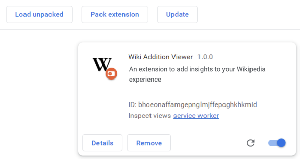
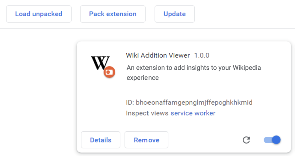

Let's install our Wikipedia Browser Extension
You should have everything up and running in under 10 minutes
Steps
Open the terminal and type
git clone https://github.com/sukritsangvong/wp-browser-extension.git.
You can also go to wp-browser-extension and click on the green button code.
Go to nodejs.org download page and find the correct version for your machine.
First, go to the folder you cloned the repo, then type
cd wikichange followed by npm install. This command will take a while to run.
Finally, type npm run start.
Open Chrome and visit extensions. Toggle developer mode to be on.
Click on "Load unpacked" and select the wikichange/dist folder.
Congratulations! WikiChange is on and running. Now go to any english Wikipedia page and have fun.

Congratulations! WikiChange is on and running. Now go to any english Wikipedia page and have fun.
